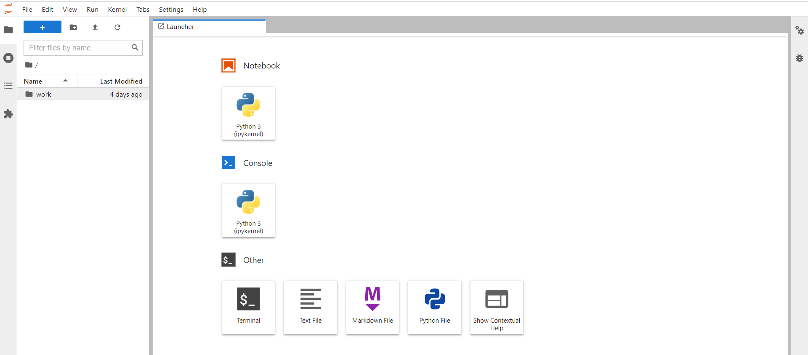

AWS
AWS私がSpark環境を使用する際にはAWSのEMRが基本となるが、EC2のxlargeを最低3台は必要で、かつ作成までに10分弱くらいは掛かってしまうので簡単にPySparkのスクリプトを試したい時用のSpark on Docker on EC2環境を作成。
Dockerのバージョン
[ec2-user@bastin ~]$ docker -v
Docker version 20.10.7, build f0df350
pyspark-notebookのコンテナをpullする
[ec2-user@bastin ~]$ docker pull jupyter/pyspark-notebook
Using default tag: latest
latest: Pulling from jupyter/pyspark-notebook
ea362f368469: Pull complete
1c2cc406fa63: Pull complete
669dbb3f6366: Pull complete
3923fd8d3607: Pull complete
d5da8a60f05b: Pull complete
78722f61450a: Pull complete
92fcb4043b45: Pull complete
e43cca32fa72: Pull complete
d6e059957f76: Pull complete
d4c1ac4b2556: Pull complete
662cec5dfc0c: Pull complete
2c1cefff5d33: Pull complete
759c927f13aa: Pull complete
804a283b4e2b: Pull complete
a702bc58bb3e: Pull complete
3da5ff2c18c0: Pull complete
31672a0ad050: Pull complete
105e72cf5bd3: Pull complete
1124e4036913: Pull complete
e9c2829123b2: Pull complete
57daad9176a1: Pull complete
e6caa5647846: Pull complete
d6b9c536082e: Pull complete
f6e352309aa2: Pull complete
Digest: sha256:398bab89543dc94d75a24869665c1433e10645bd100267a6f89e8768477d14a8
Status: Downloaded newer image for jupyter/pyspark-notebook:latest
docker.io/jupyter/pyspark-notebook:latest
pyspark-notebookのコンテナを実行
[ec2-user@bastin ~]$ docker run -p 8888:8888 -e JUPYTER_ENABLE_LAB=yes --name pyspark jupyter/pyspark-notebook
WARNING: JUPYTER_ENABLE_LAB is ignored, use DOCKER_STACKS_JUPYTER_CMD if you want to change the command used to start the server
Entered start.sh with args: jupyter lab
/usr/local/bin/start.sh: running hooks in /usr/local/bin/before-notebook.d as uid / gid: 1000 / 100
/usr/local/bin/start.sh: running script /usr/local/bin/before-notebook.d/spark-config.sh
/usr/local/bin/start.sh: done running hooks in /usr/local/bin/before-notebook.d
Executing the command: jupyter lab
[I 2022-01-28 13:50:43.462 ServerApp] jupyterlab | extension was successfully linked.
[W 2022-01-28 13:50:43.467 NotebookApp] 'ip' has moved from NotebookApp to ServerApp. This config will be passed to ServerApp. Be sure to update your config before our next release.
[W 2022-01-28 13:50:43.468 NotebookApp] 'port' has moved from NotebookApp to ServerApp. This config will be passed to ServerApp. Be sure to update your config before our next release.
[W 2022-01-28 13:50:43.468 NotebookApp] 'port' has moved from NotebookApp to ServerApp. This config will be passed to ServerApp. Be sure to update your config before our next release.
[I 2022-01-28 13:50:43.475 ServerApp] Writing Jupyter server cookie secret to /home/jovyan/.local/share/jupyter/runtime/jupyter_cookie_secret
[I 2022-01-28 13:50:43.864 ServerApp] nbclassic | extension was successfully linked.
[I 2022-01-28 13:50:43.901 ServerApp] nbclassic | extension was successfully loaded.
[I 2022-01-28 13:50:43.903 LabApp] JupyterLab extension loaded from /opt/conda/lib/python3.9/site-packages/jupyterlab
[I 2022-01-28 13:50:43.903 LabApp] JupyterLab application directory is /opt/conda/share/jupyter/lab
[I 2022-01-28 13:50:43.906 ServerApp] jupyterlab | extension was successfully loaded.
[I 2022-01-28 13:50:43.907 ServerApp] Serving notebooks from local directory: /home/jovyan
[I 2022-01-28 13:50:43.907 ServerApp] Jupyter Server 1.13.4 is running at:
[I 2022-01-28 13:50:43.907 ServerApp] http://eff596c2a2b0:8888/lab?token=65c095c6ac9d7bf2d3eec7189bc1c0e8e5c254f1aad33689
[I 2022-01-28 13:50:43.907 ServerApp] or http://127.0.0.1:8888/lab?token=65c095c6ac9d7bf2d3eec7189bc1c0e8e5c254f1aad33689
[I 2022-01-28 13:50:43.907 ServerApp] Use Control-C to stop this server and shut down all kernels (twice to skip confirmation).
[C 2022-01-28 13:50:43.910 ServerApp]
To access the server, open this file in a browser:
file:///home/jovyan/.local/share/jupyter/runtime/jpserver-7-open.html
Or copy and paste one of these URLs:
http://eff596c2a2b0:8888/lab?token=65c095c6ac9d7bf2d3eec7189bc1c0e8e5c254f1aad33689
or http://127.0.0.1:8888/lab?token=65c095c6ac9d7bf2d3eec7189bc1c0e8e5c254f1aad33689
[I 2022-01-28 13:51:18.309 LabApp] Build is up to date
jupyterのコンソールに移動
Public IPやElastic IPを付与している場合。セキュリティグループ等で許可を。
http://<Public IP>:8888/lab?token=65c095c6ac9d7bf2d3eec7189bc1c0e8e5c254f1aad33689

OtherにあるTerminalをクリックするとPySpark環境を実行出来るようになる